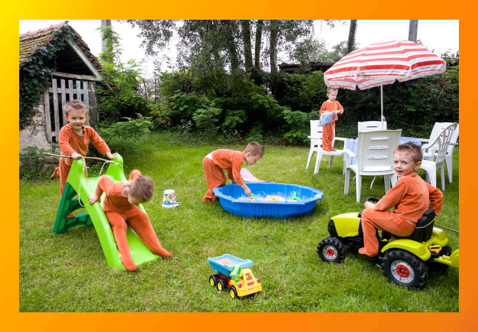

Procédures élémentaires de retouches d'image avec GIMP
- Duplication de l'image // faire un copie dans le format du logiciel .psd ou .xcf.
- Vérifier la qualité de l'image et sa résolution // TAILLE DE L'IMAGE.
- Recadrer l'image // dimension et orientation // TAILLE DE L'IMAGE.
- Suppresion des imperfections // poussières, rayures, pixels manquants et détails disgracieux
- Contraste et plage de couleur
- Suppression d'une dominante de couleur
- Réglage de la couleur et des nuances dans certaines parties de l'image pour entre autres faire ressortir les tons clairs, moyens et foncés
- Renforcement de la netteté
Une photo de Venise
La camionnette
Peinture
Photomontage avec GIMP
